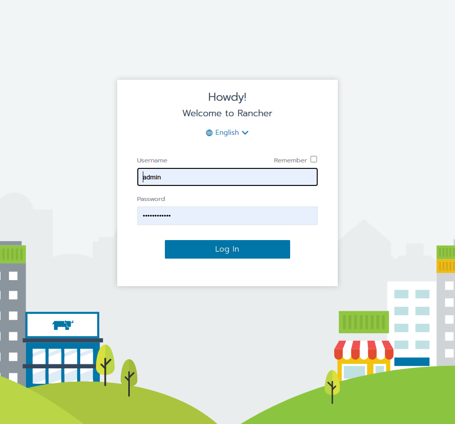

使用Rancher安装Kubenetes
如果Rancher安装方式发生变化，请始终参考Rancher官方文档。
安装RancherD
RancherD是Rancher最新支持的一种部署方案，运行以下命令来安装RancherD以进行Rancher + Kubenetes的部署。
curl -sfL https://get.rancher.io | sh -
如果遇到网络问题，可以先行下载rancherd的安装包再进行手动安装。
# fill the proxy url if you use one
export https_proxy=
curl -s https://api.github.com/repos/rancher/rancher/releases/latest \
|jq '.assets[] |
select(.browser_download_url|contains("rancherd-amd64.tar.gz")) |
.browser_download_url' -r \
|wget -ci -
tar xzf rancherd-amd64.tar.gz -C /usr/local
之后只需要启动 rancherd-server 服务就可以得到一个Kubenetes环境。
systemctl enable rancherd-server
systemctl start rancherd-server
查看Kubenetes安装状态：
journalctl -fu rancherd-server
最后看到 successfully，说明Kubenetes已安装完成。
"Event occurred" object="cn120" kind="Node" apiVersion="v1" \
type="Normal" reason="Synced" message="Node synced successfully"
使用kubectl
集群启动后，配置KUBECONFIG，并将rke2路径加入环境变量以使用kubectl命令：
export KUBECONFIG=/etc/rancher/rke2/rke2.yaml
export PATH=$PATH:/var/lib/rancher/rke2/bin
查看Rancher部署状态：
kubectl get daemonset rancher -n cattle-system
kubectl get pod -n cattle-system
Result:
NAME DESIRED CURRENT READY UP-TO-DATE AVAILABLE NODE SELECTOR AGE
rancher 1 1 1 1 1 node-role.kubernetes.io/master=true 36m
NAME READY STATUS RESTARTS AGE
helm-operation-5c2wd 0/2 Completed 0 34m
helm-operation-bdxlx 0/2 Completed 0 33m
helm-operation-cgcvr 0/2 Completed 0 34m
helm-operation-cj4g4 0/2 Completed 0 33m
helm-operation-hq282 0/2 Completed 0 34m
helm-operation-lp5nn 0/2 Completed 0 33m
rancher-kf592 1/1 Running 0 36m
rancher-webhook-65f558c486-vrjz9 1/1 Running 0 33m
设置Rancher用户名及密码
rancherd reset-admin
你会看到如下的结果：
INFO[0000] Server URL: https://*.*.*.*:8443
INFO[0000] Default admin and password created. Username: admin, Password: ****
打开:8443的网址，可以看到登录页面：

输入上面设置的用户名和密码，进入Rancher仪表盘。

高可用设置
获取集群当前的token： /var/lib/rancher/rke2/server/node-token.
在其他节点上安装rancherd-server。
tar xzf rancherd-amd64.tar.gz -C /usr/local
systemctl enable rancherd-server
创建RKE2配置所在目录：
mkdir -p /etc/rancher/rke2
添加配置文件 /etc/rancher/rke2/config.yaml.
server: https://192.168.60.120:9345
token: <the token in /var/lib/rancher/rke2/server/node-token>
server 为第一个启动的节点地址加端口号9345，token为上面从文件获取的token值。
启动rancherd-server服务，就可以将此节点加入Kubenetes集群。
systemctl start rancherd-server
journalctl -fu rancherd-server
其他节点可复制配置和操作，直到所有节点都加入集群。
我们使用3个节点，输入 kubectl get daemonset rancher -n cattle-system查看当前启动的rancher节点数量：
NAME DESIRED CURRENT READY UP-TO-DATE AVAILABLE NODE SELECTOR AGE
rancher 3 3 3 3 3 node-role.kubernetes.io/master=true 129m
至此，一个三节点的高可用Rancher + Kubenetes集群已经安装成功。